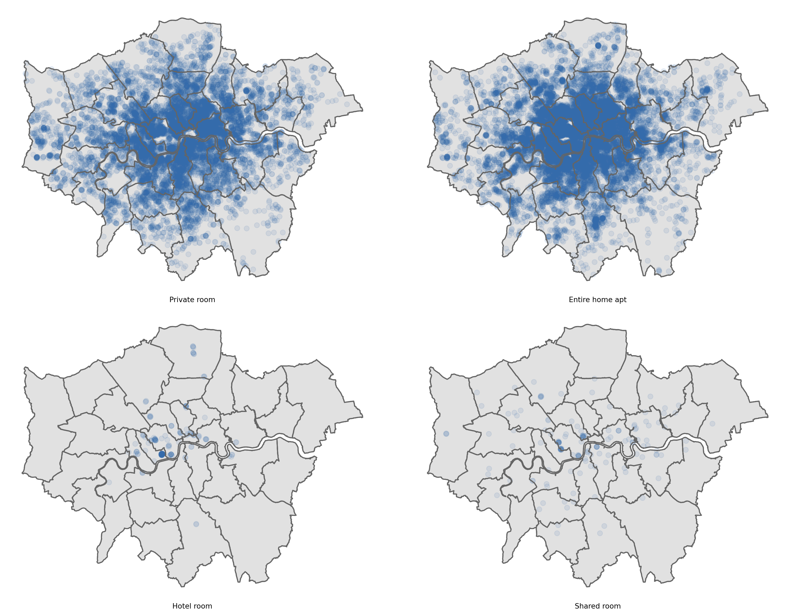
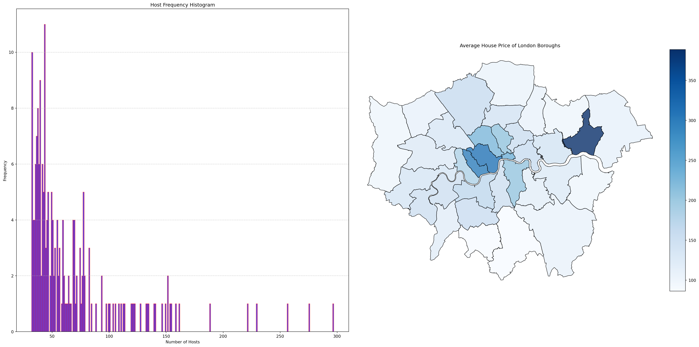

/Users/liuzhengyong/Library/Python/3.9/lib/python/site-packages/urllib3/__init__.py:34: NotOpenSSLWarning: urllib3 v2 only supports OpenSSL 1.1.1+, currently the 'ssl' module is compiled with 'LibreSSL 2.8.3'. See: https://github.com/urllib3/urllib3/issues/3020
warnings.warn(Group Name’s Group Project
We, [insert your group’s names], confirm that the work presented in this assessment is our own. Where information has been derived from other sources, we confirm that this has been indicated in the work. Where a Large Language Model such as ChatGPT has been used we confirm that we have made its contribution to the final submission clear.
Date:
Student Numbers:
| What Went Well | What Was Challenging |
|---|---|
| A | B |
| C | D |
Response to Questions
1. Who collected the data?
Inside Airbnb’s data was chiefly collected by Murray Cox, its founder, who leverages his skills in community activism, art, and data for social change. The project also benefits from contributions by John Morris, a key collaborator responsible for the website’s design and major reports, and Taylor Higgins, who focuses on data organization and community building. Additional support comes from various past collaborators and an advisory board, each contributing unique expertise to the analysis and presentation of Airbnb’s impact on communities.
2. Why did they collect it?
The data on London’s Airbnb locations, types, availability and rental prices is collected to inform data-driven public service and policy innovation. This approach aims to address complex urban planning and housing issues by analyzing housing market dynamics and population-related factors to improve policy decisions.
3. How was the data collected?
The data featured on the ‘Inside Airbnb’ website was primarily collected from the Airbnb Website itself, offering a comprehensive range of information such as property listings, availability calendars, customer reviews, and detailed metrics for listings in various regions and cities globally. Additionally, the project also involves collaboration with outside contributors who choose to participate. These collaborators, possibly from various professional backgrounds or with specific expertise, contribute to enhancing and expanding the data collection process.
4. How does the method of collection impact the completeness and/or accuracy of its representation of the process it seeks to study, and what wider issues does this raise?
The collection of Airbnb data, excluding private listings, faces limitations like time lags and lacks insights into private communications or internal policies (Slee, n.d.). Changes in Airbnb’s website structure can impact data accuracy, and privacy concerns arise regarding personal information. Policymakers using this data risk introducing biases, potentially leading to ineffective or unfair policies, and users must be aware of these constraints to avoid incorrect inferences (Slee, n.d.).
5. What ethical considerations does the use of this data raise?
It’s crucial to navigate a complex web of ethical and legal considerations, including privacy, data ownership, and user consent. Ethical data handling mandates not only transparency in collection, processing, and usage but also adherence to principles like data minimization, accuracy, non-discrimination, fairness, and accountability (Stoyanovich, Howe & Jagadish, 2020). Complying with legal regulations and preventing misuse are paramount, ensuring that any data collected is with consent, is the minimum necessary, and is used in a manner that avoids discriminatory practices and unauthorized purposes. While publicly accessible information may seem readily available, using it without consent can lead to ethical dilemmas and legal challenges in certain jurisdictions. Therefore, alongside maintaining openness about the data’s origins and modifications, securing the data against unauthorized access is a critical responsibility, requiring robust storage and handling measures.
6. With reference to the data (i.e. using numbers, figures, maps, and descriptive statistics), what does an analysis of Hosts and Listing types suggest about the nature of Airbnb lets in London?
Preparation
Loading Package
'/Users/liuzhengyong/Desktop/FSDS-project/Template'6.1 Geographic Distribution Map
37242
通过四种类型房源的分布对比可得，Entire home apt和private room分布范围广且在伦敦市中心（特别是商业和旅游区）非常密集；Hotel room集中在市中心的旅游和商务区域、shared room的分布较为分散，这两种房源的密度显著低于前两种。说明私密性、完整性好的住房更符合市场需求。

6.2 Host type and number of listings
通过单一房东拥有房源数量的频数直方图可知，大量的房东只拥有少数房源，可能表明这部分房东是兼职或偶尔出租自己的空置房产；另一方面，也有少数房东控制了大量房源。这些可能是专业的短期租赁公司或投资者。通过比较Airbnb在伦敦各区域房源的均价可得，高需求区域（如伦敦市中心），Airbnb的价格普遍较高，而在边远或非商业旅游热点区域，价格可能更为合理。


Summary
In summary, the distribution of listings: Entire home apt (completeness) and private room (privacy) show a trend of concentration in the city centre and hotspots, covering a wide range of areas, and adapting to the market demand; the average price of the area: at the same time, the high price of areas in London (especially in the city centre) with a dense number of Airbnb listings in the convenience of tenants’ diversified needs at the same time as rewarding the landlord with a high income; the type of landlord: a large number of landlords only have a handful of listings, suggesting that Airbnb offers a relatively easy market for individual hosts to enter. A small number of landlords (specialised short-term rental companies or investors) control a large number of listings and occupy a large share of the market, making them susceptible to influencing the long-term rental market.
7. Drawing on your previous answers, and supporting your response with evidence (e.g. figures, maps, and statistical analysis/models), how could this data set be used to inform the regulation of Short-Term Lets (STL) in London?
References
Inside Airbnb (2016) ‘Inside Airbnb: Home’, Available at: Inside Airbnb (Accessed: 04 December 2023).
Slee, T. (2017). Airbnb Data Collection: Methodology and Accuracy. Retrieved from http://tomslee.net/airbnb-data-collection
Stoyanovich, J., Howe, B. & Jagadish, H.V., 2020. Responsible data management. Proceedings of the VLDB Endowment, 13(12).